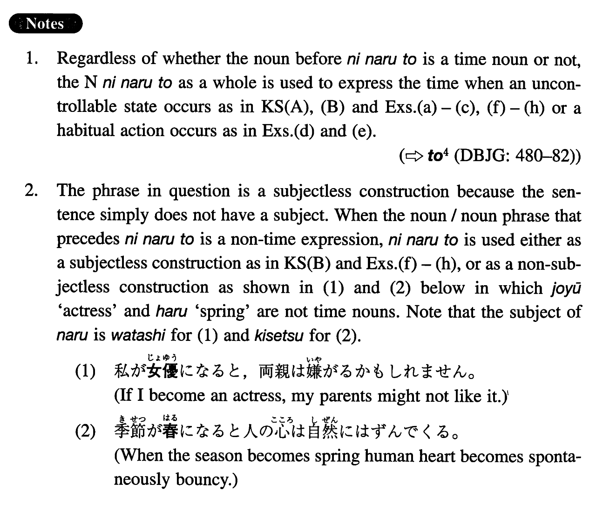

←
DoJG
→
になると
(I. 262)
Example sentences
(ksa).
夏
になると
、摂氏三十度を越す日が多いです。
In summer (literally: When it becomes summer), there are many days that exceed 30 degrees Celsius.
(ksb).
父は食べ物のこと
になると
、とてもやかましかった。
When it comes to the matter of food, my father was very particular.
(a).
四月半ば
になると
、この辺は桜が綺麗に咲きます。
In this area, in the middle of April, the cherry trees bloom beautifully.
(b).
ニューイングランドと言われるアメリカの東北地方は、秋
になると
、紅葉がとても綺麗です。
In the north-east area of the U.S. called New England, tinted autumn leaves are very beautiful.
(c).
私は夜十一時
になると
、頭が働かなくなる。
At about 11 p.m., my brain stops working.
(d).
子供の頃、夏
になると
、両親は僕を海に連れて行ってくれた。
When I was a child, in summer, my parents took me to the ocean.
(e).
大学生の時は、休み
になると
、よく旅行をした。
When I was a college student, I travelled a lot during vacations.
(f).
彼はフットボールの話
になると
夢中だ。
When the topic of the conversation is football, he is totally absorbed in it.
(g).
社長は娘のこと
になると
、人が変わったように甘くなる。
The president becomes lenient as if he were a different person, when it comes to the matter of his daughter.
(h).
雪
になると
、この空港はよく閉鎖になる。
When it becomes snow, this airport is often closed.
Formation
(i)
Noun (time)
になると
八
になると
When it becomes 8 o’clock; at 8 o’clock
(ii)
Noun (non-time)
になると
雨
になると
When it becomes rain
